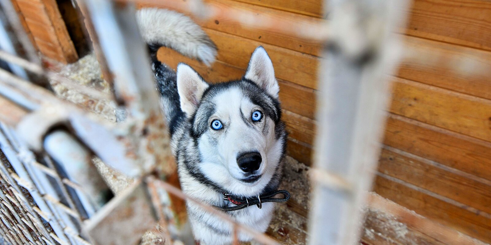
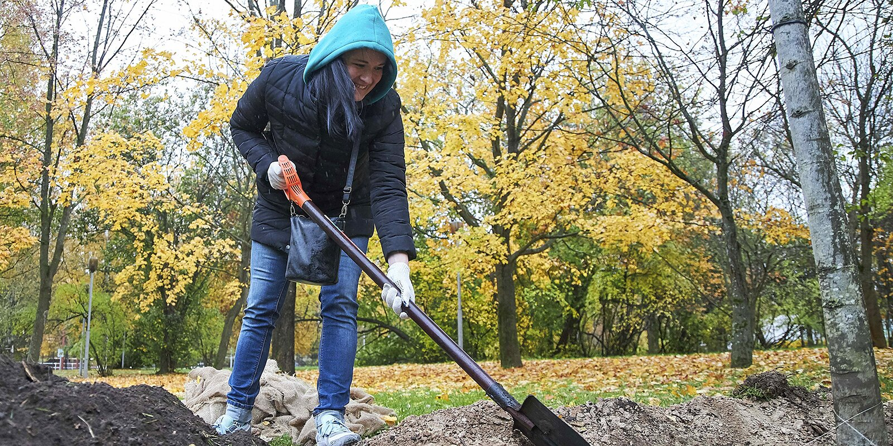

Communitas Awards: four digital projects of Moscow government internationally recognized
Four digital projects of the Moscow government became winners of the international Communitas Awards at the end of the third quarter of 2021. The Moscow government charity service on the mos.ru portal, Moscow water saving program, Our Tree family and environmental protection project, and the Empathic Muscovite portal.
The Communitas Awards are awarded quarterly and evaluate projects that address community challenges, environmental protection issues and urban sustainability improving.
“Among the winners of the Communitas Awards are projects that make Moscow more comfortable and friendly every day. These are some of the Moscow most sought-after digital initiatives that enjoy well-deserved popularity among citizens. For example, it took less than a year to raise over eight million rubles via mos.ru charity service to help those in need. And the Our Tree project helps thousands of Moscow families celebrate the child’s birth and plant a memorial tree. International recognition confirms over again that these initiatives both improve citizens’ lives and meet global requirements and trends too,” said Eduard Lysenko, Minister of the Moscow Government, Head of the Information Technology Department.
Helping people
The Moscow charity service on the mos.ru portal won in the Service Leadership nomination. It was launched in October 2020 at the initiative of Moscow non-profit organizations and allowed Muscovites to make charitable donations in convenient and secure online format. To date, 55 credible funds are connected to the service. Muscovites donated over 8.2 million rubles to support children, elderly, large families and people with disabilities, as well as homeless animals.

You can choose a suitable program and make a donation in the dedicated section or in the My Payments service on the mos.ru portal. Besides, you can transfer the sum of donation using the My Moscow mobile application. Users can be sure that donated funds will go exactly to the targets — all charitable organizations connected to the service publish quarterly reports on the Emphatic Muscovite website.
The mos.ru charity service was developed by the Moscow Department of Information Technologies in cooperation with Moscow Committee for Public Relations and Youth Policy and with support of the Public Chamber of Moscow.
“The charity service provides an opportunity to support Moscow's charitable programs on the unified city portal mos.ru. The service has recently gained much popularity — the number of project partner funds keeps growing, and Muscovites underline its convenience and reliability. The international recognition of the service is the result of joint efforts of the charity community and the Moscow Government. We will be glad if our experience turns out to be in demand and useful for other metropolises,” said Ekaterina Dragunova, Chairperson of the Moscow Public Relations and Youth Policy Committee.
In the category "Changes for the better" the winner was the information system "Emphatic Muscovite", which combines efforts of the NPOs, authorities and emphatic Muscovites.
The key element of the system is the Emphatic Muscovite portal, visited by at least 200 thousand unique users annually. Thus, NPOs representatives can receive resource and financial support, find partners and employees, find out how to get free consultation, and take advantage of additional opportunities for employee training.
Volunteers can choose a suitable project. For their convenience, filters are provided: for example, you can search for a project by organization name, area, or category.
Muscovites have access to detailed information regarding NPOs and their free of charge projects. They can also find work in charities, NPO partnerships and other socially oriented organizations.
Clean water
In the category "Leadership in the field of ethics and environmental protection" the winner was the Moscow water saving program. This is a joint project of the Department of Information Technologies and the Department of Housing and Utilities, with participation of Mosvodokanal JSC. The project goal is to stimulate citizens’ water saving by changing their user habits.
The first stage took place at the beginning of 2021 when the service, used by about a million people every month for transmitting water and heat meter readings on the mos.ru portal, was modernized. The visualized analytics of water consumption in comparison with the city average indicators became available to users where data of 4.5 million households are taken into account. If water consumption decreases, the service will notify about it.
Early this year, the Moscow government also carried out the "Price of Water" campaign. The back side of the payment document contained a QR code. Once scanned, it enables residents to interactively observe the water supply system, using alternate reality tech.
In addition, mos.ru offers an interactive test, that helps residents find out if they can save water and receive useful tips on water saving.
And on top of that, a special project “Clean Water: how it is produced“ was launched in June 2021. It provides the most important and useful information on water supply system. The project informs on the large water intake and purification, as well as drinking water supply system.
Our tree
The winner in the category "Sustainability" was the project "Our Tree". Since 2019, every Moscow family can plant a memorial tree in one of the city's parks celebrating the birth of a child. Over the past two years, more than seven thousand trees appeared in 27 Moscow parks at the request of residents.

You can apply for participation in the project on the project page. Any parent permanently living in Moscow, can do it before the child turns three years old. An interactive map offers to select a park, site and tree species for planting. Sites and trees accessibility is displayed online.
Users will receive an invitation to a tree-planting event no later than 10 days before. After tree-planting, parents receive a certificate of a memorial tree and souvenirs with symbols of the project. A GPS tag enables parents to find the tree planted to celebrate their child’s birth, that will grow together with him.
Communitas Awards
The Communitas Awards were established in 2010 by an association of marketing and communications professionals. The Communitas Awards recognize merited companies, organizations and individuals who donate their resources selflessly, as well as those who change the business practices for the benefit of their communities.